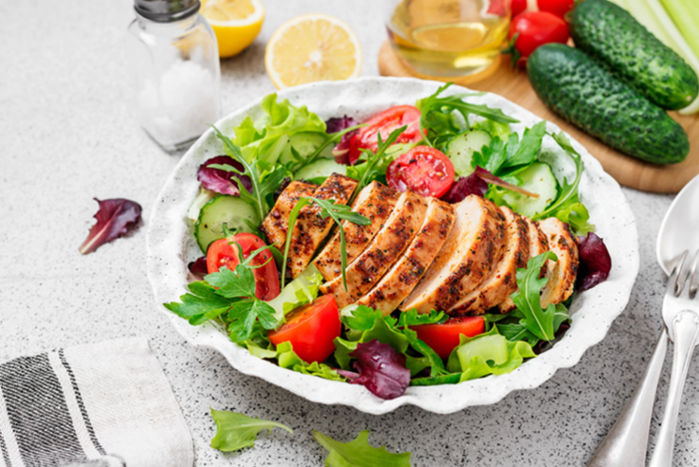

İnsan vücudunun hayatta kalabilmesi ve günlük faaliyetlerini sürdürebilmesi için belirli miktarda kaloriye ihtiyacı vardır. Kişinin boy, kilo gibi belirli özelliklerine göre değişen bu kalori miktarına günlük kalori ihtiyacı denir. Aşağıdaki hesaplama aracını kullanarak günlük kalori ihtiyacınızı hemen hesaplayabilirsiniz.
Günlük kalori ihtiyacınızı bazal metabolizma hızınızı kullanarak hesaplayabilirsiniz.
Tanım olarak BMR, dinlenme halindeki metabolizma hızıdır. Solunum, sindirim ve dolaşım gibi fonksiyonları sürdürmek
için gereken minimum enerji seviyesidir. İlgili formül genellikle vücut ağırlığını korumak için ihtiyaç duyulan enerjiyi
azaltarak kilo vermek için kullanılır.
Bir insanın günlük kalori ihtiyacı hesaplama formülü ile bazal metabolizma hızınızı sayısal bir değere
dönüştürebilirsiniz. Bu formül cinsiyetinize, yaşınıza ve vücut ölçülerinize göre belirlenir. Hareketsizken
ne kadar kalori yaktığınızı söyleyen bu formül şu şekilde hesaplanır:
Yataktan kalkıp hareket etmeye başladığınızda daha fazla enerji harcayacağınız için bu rakamı ayarlamanız gerekecektir.
